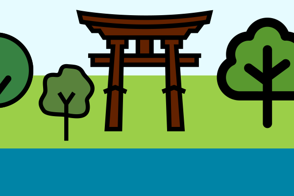
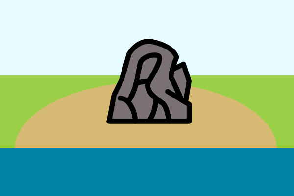
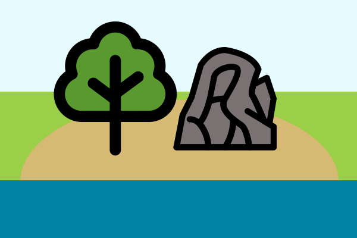

自然の親密な本質を模倣し、人生の真の意味を発見する。
Imitate the intimate essence of nature & discover the true meaning of life.

閲覧
Viewing
A zen garden is usually relatively small, surrounded by a wall, and is often meant to be seen while seated from a single viewpoint outside the garden, such as the porch of the hojo

砂利
Gravel
Gravel is usually used in zen gardens because it is less disturbed by rain and wind; Shirakawa, which is a black-speckled granite from Kyoto, was prized for its ability to hold grooves

象徴主義
Symbolism
In the Japanese rock garden, rocks sometimes symbolize mountains (particularly Horai or they can be boats or a living creature, usually a turtle, or a carp